- Singers, teachers, speakers and performers frequently suffer from vocal fatigue, hoarseness and temporary voice loss.
- Continuous voice usage without proper monitoring can cause long-term strain and irreversible vocal damage.
- Most professionals are unaware of healthy vocal limits, hydration requirements and ideal recovery intervals.
- Existing solutions are mostly reactive treatments instead of preventive real-time monitoring systems.
The Problem
Voice Loss and Vocal Strain in Performers

This diagram shows how normal voice usage gradually leads
to vocal strain and damage due to lack of awareness and feedback.
Purpose:
- Identifies the causes of vocal strain.
- Shows gaps in current prevention methods.
- Explains why early detection is difficult.
- Highlights the need for real-time monitoring.
What it Tells Us:
- Users often ignore early signs of strain.
- Awareness usually comes too late.
- Current solutions are mostly reactive.
- There is no objective feedback system.
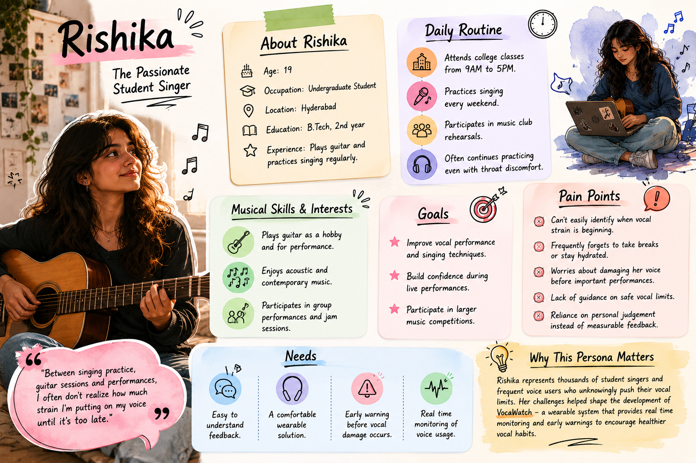
A persona is a fictional representation of the target user.
Purpose:
- Helps understand user behaviour and needs.
- Guides user-focused design decisions.
- Prevents assumption-based designing.
What it Tells Us:
- The user frequently overuses their voice.
- They rely on how their voice “feels.”
- They need simple real-time guidance.
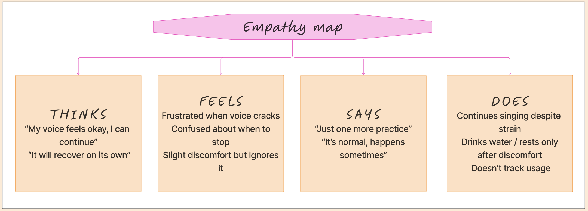
This empathy map shows what the user thinks, feels,
says and does during vocal strain.
An empathy map helps understand user emotions and behaviour.
An empathy map helps understand user emotions and behaviour.
Purpose:
- Reveals hidden behavioural patterns.
- Connects emotions with actions.
- Helps understand user mindset.
What it Tells Us:
- Users normalize discomfort.
- They continue usage despite strain.
- Self-awareness alone is unreliable.

This pain points map highlights the major challenges users
face regarding vocal health and strain awareness.
Pain points are recurring problems experienced by users.
Pain points are recurring problems experienced by users.
Purpose:
- Identifies key user struggles.
- Helps define design requirements.
- Shows where current methods fail.
What it Tells Us:
- Early strain is hard to detect.
- Feedback systems do not exist.
- Preventive behaviour is inconsistent.
- Users unknowingly overuse their voice.
Why Existing Solutions Fail?
- Most solutions focus on treatment after damage.
- Users only realize strain after discomfort begins.
- No wearable systems provide continuous monitoring.
- Existing apps depend on manual input.
- Professional vocal coaching is not accessible to everyone.
Why This Problem Matters?
- Voice is essential for communication and performance.
- Vocal damage can affect confidence and career opportunities.
- Students, singers, teachers, and speakers are all affected.
- Early prevention is easier than treatment.
- Long-term damage can become irreversible.
What We Needed to Understand
- User behaviour during vocal strain
- Awareness levels
- Existing prevention habits
- Real-world vocal usage patterns
- Gaps in current monitoring systems
Research
Understanding Vocal Strain, User Behaviour and Prevention Gaps
Research Methodology
Primary Research
- Interviews
- Observation
- Behaviour analysis
- Informal surveys
Secondary Research
- Medical papers
- Vocal health articles
- Case studies
- Existing technologies
1. Root Causes
- Continuous voice usage during singing, teaching, rehearsals and speaking creates excessive strain over time.
- Users often ignore early symptoms such as hoarseness, dryness and vocal fatigue.
- Most people rely on subjective feelings instead of measurable indicators.
- Performance pressure pushes users to continue despite discomfort.
- Preventive practices like hydration and vocal rest are followed inconsistently.
- Existing solutions are reactive rather than preventive.
- Environmental factors like dry air and poor humidity further increase vocal strain.
2. Primary Research
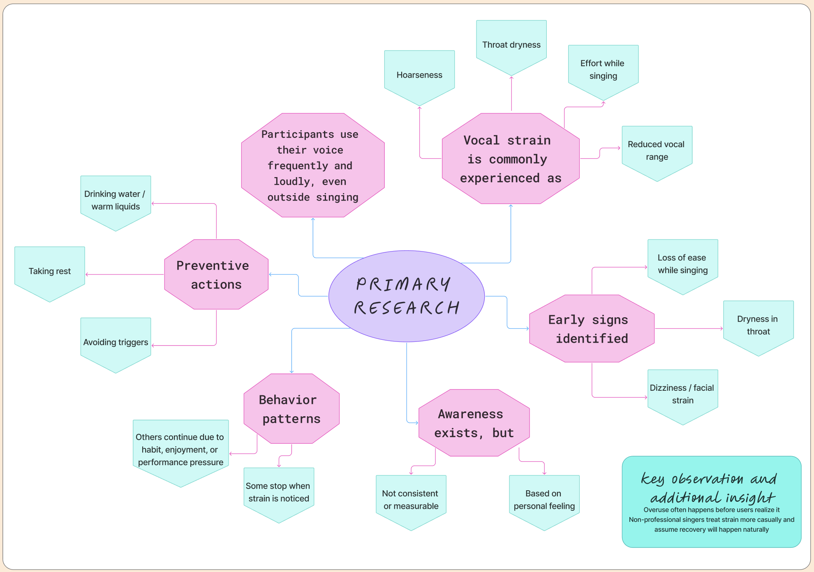
The primary research focused on understanding
real-world vocal habits, behaviour and awareness levels.
Key Findings:
- Users frequently use their voice for long durations.
- Early symptoms are commonly ignored.
- Vocal care is inconsistent and subjective.
- Rest and hydration happen only after discomfort.
- No structured feedback systems exist.
What it Revealed:
- Users unintentionally overuse their voice.
- Delayed reactions increase damage risk.
- Users need simple real-time guidance.
- Monitoring systems are currently missing.
3. Secondary Research
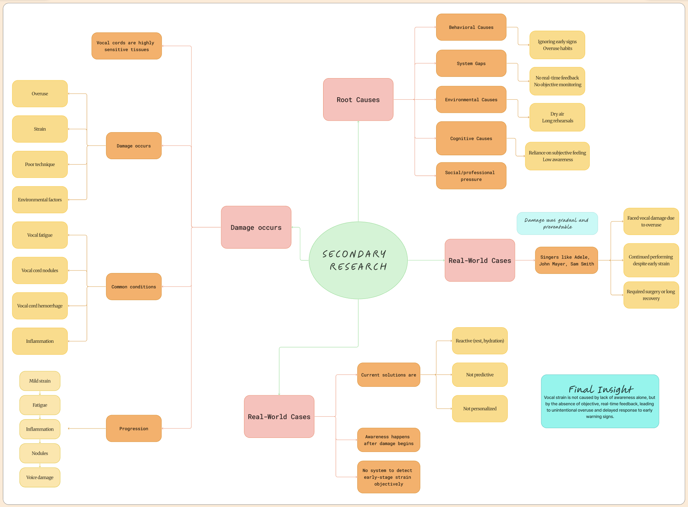
Secondary research included analysing
medical papers, articles and vocal health studies.
Main Observations:
- Singers are highly vulnerable to vocal disorders.
- Common issues include hoarseness, nodules and vocal fatigue.
- Poor vocal habits increase long-term damage risk.
- Existing preventive practices depend heavily on awareness.
- Real-time monitoring systems are largely absent.
Research Gap:
- Existing systems mainly treat damage after it occurs.
- Users lack measurable vocal health data.
- Preventive care is not integrated with technology.
- Early warning systems are missing.
- This creates scope for wearable monitoring solutions.
4. Citations
- https://www.orlandoent.com/blog/adeles-vocal-cord-polyp-explained/
- https://www.researchgate.net/publication/377944725_Prevalence_of_Voice_Disorders_among_University_Teachers
- https://www.theguardian.com/music/2015/may/08/sam-smith-to-undergo-vocal-surgery
- https://www.researchgate.net/publication/315518255_Prevalence_of_Voice_Disorders_in_Singers_Systematic_Review_and_Meta-Analysis
- https://pmc.ncbi.nlm.nih.gov/articles/PMC11708095/
- https://dspace.mit.edu/bitstream/handle/1721.1/100244/Guttag_Learning%20to.pdf
- https://www.researchgate.net/publication/390050642_VOCAL_DISTURBANCES_ENCOUNTERED_AMONG_VOICE-RELATED_PROFESSIONALS
Opportunity
Scope for Solution
Key Opportunity Areas
- Users need simple and non-disruptive guidance during performances
- Professional singers and performers rely entirely on vocal consistency for their livelihood
- Teachers, public speakers, broadcasters, podcasters, and content creators also experience long periods of voice strain daily
- Increasing awareness of wellness, bio-tracking, and personalized health monitoring inspired the idea of a real-time vocal monitoring wearable
- Stage performers prefer solutions that blend into aesthetics rather than medical-looking equipment
- Users needed a solution that works continuously in the background without interrupting natural speech or performance
- The opportunity emerged from recognizing that vocal health monitoring could become part of everyday wearable technology similar to smartwatches and fitness trackers
Design Insight
- Vocal health monitoring can extend beyond medical treatment into preventive wearable technology
- Users prefer lightweight, stylish, and non-intrusive wearable solutions
- Continuous real-time monitoring can help users develop healthier vocal habits before serious strain occurs
Solution Requirement List
Functional Requirements
- Real-time voice usage monitoring
- Early strain detection
- Continuous data collection
- Pattern recognition for overuse
- Instant feedback generation
User Requirements
- Comfortable for long-term wear
- Non-intrusive during singing or speaking
- Easy to understand
- Lightweight and portable
- Suitable for non-professional users
Design Requirements
- Minimal and aesthetic appearance
- Stable positioning near vocal source
- Reliable sensor placement
- Durable and wearable form factor
Technical Requirements
- Voice intensity sensing
- Throat vibration sensing
- Environmental monitoring
- Low power consumption
- Real-time data processing
- User baseline adaptation
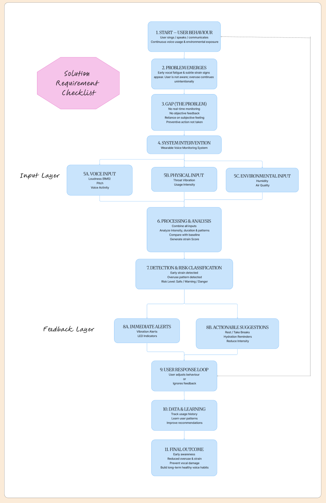
Solutions We Explored
Pendant-Style Wearable
- Positioned near the throat for stable and consistent sensing
- Captures voice input, throat vibrations, and environmental data together
- Allows integration of multiple sensors in a compact wearable form
- Functions as both technology and an everyday accessory
- Comfortable and lightweight for long performances and daily use
- Slightly farther from the throat compared to direct-contact solutions
- External noise interference may reduce voice-reading accuracy
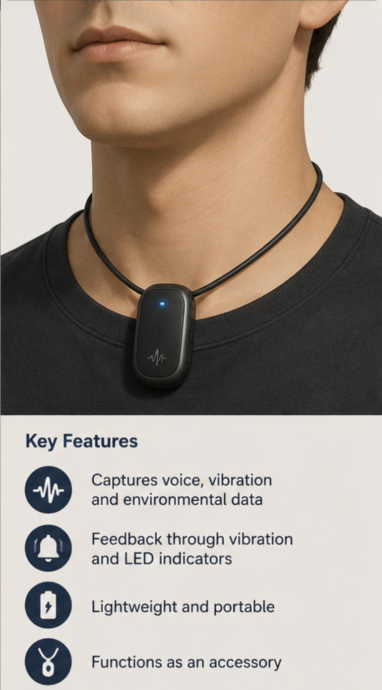
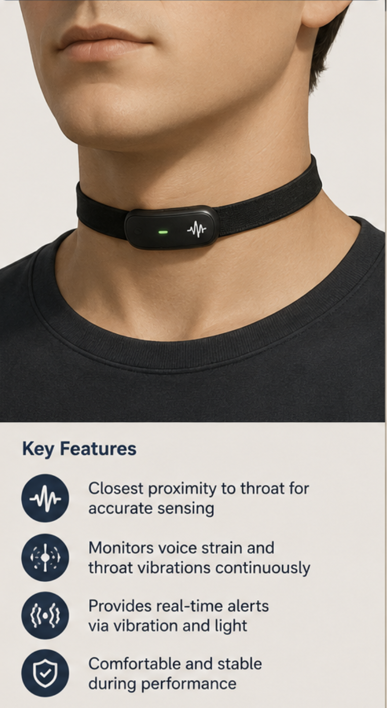
Choker-Style Wearable
- Explored for close throat contact and accurate vibration sensing
- Designed to blend naturally with stage and performance aesthetics
- Provides stable sensor placement during movement
- Provides real-time feedback through vibration and LED indicators
- Enables continuous monitoring and real-time feedback
- Compact and minimal wearable structure
- Suitable for singers and performance-focused users
- Practical for continuous monitoring without interrupting performances
- Possibly less comfortable for prolonged use due to tight neck placement
Adhesive Patch System
- Lightweight, minimal and discreet wearable design
- Direct skin contact improves vibration detection accuracy
- Suitable for focused short-term monitoring sessions
- Allows close placement near vocal vibration points
- Limited by placement consistency and repeated application
- Potential concerns regarding skin irritation and long-term comfort
- Limited space for integrating larger sensors or batteries
- Less practical for continuous everyday monitoring
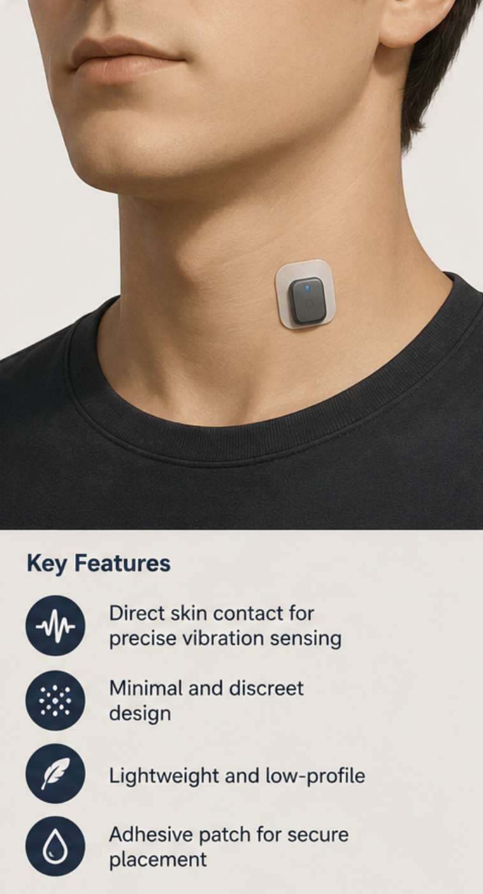
Final Solution and Why We Chose It
Why the Choker Was Selected
- The choker-style wearable provided the closest and most stable positioning near the throat.
- Its placement allowed more accurate sensing of throat vibrations and vocal activity.
- The design enabled continuous monitoring without requiring the user to hold or adjust the device.
- It blended naturally with stage and performance aesthetics, making it more acceptable for singers and performers.
- The compact wearable form allowed integration of multiple sensors while remaining lightweight.
- Unlike adhesive patches, it avoided repeated application and positioning inconsistencies.
- Compared to pendant-style designs, it maintained more reliable proximity to the vocal source during movement.
Final Design Direction
- A wearable choker-based vocal health monitoring system.
- Designed to detect early signs of vocal strain in real time.
- Combines vocal sensing, throat vibration monitoring, and environmental analysis.
- Provides immediate feedback through non-intrusive alerts.
- Encourages preventive vocal care and healthier voice usage habits.
In Summary
Based on the identified opportunities, evaluated concepts, and user-focused requirements, the team finalized the choker-style wearable as the most effective solution for stable sensing, continuous monitoring, and real-world usability. The next phase focused on developing a functional prototype integrating sensing, processing, and feedback systems.
Our Product — VocaWatch
A Smart Wearable System for Real-Time Vocal Health Monitoring
Intelligent Vocal Care Through Smart Wearable Technology
VocaWatch is a wearable vocal-health monitoring system designed to help singers, speakers, teachers and performers protect their voice through intelligent real-time monitoring. The wearable choker form factor allows stable throat positioning, enabling accurate vibration sensing and continuous feedback. By combining throat sensing, voice intensity monitoring, environmental sensing and intelligent processing, the system provides preventive care before severe strain occurs.
Real-Time Monitoring
Preventive Vocal Care
Wearable Choker Design
Environmental Sensing
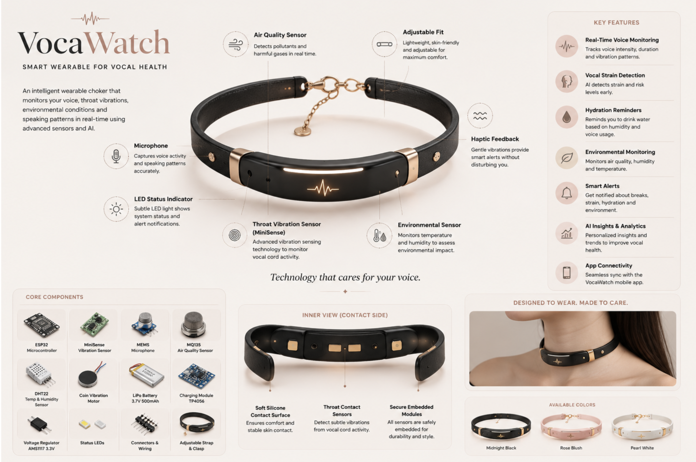
Hardware Components
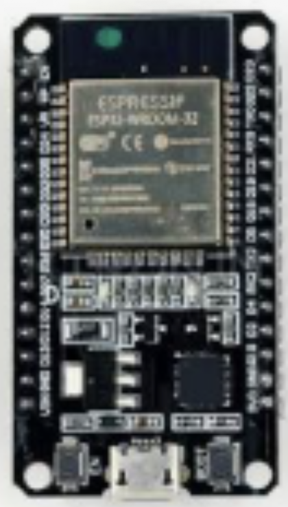
ESP32 Development Board
The ESP32 acts as the brain of the system. It collects sensor data, processes logic, controls alerts and manages system operation.
MiniSense 100 Sensor
Detects throat vibrations during speaking and provides an EGG-inspired sensing approach for vocal activity monitoring.
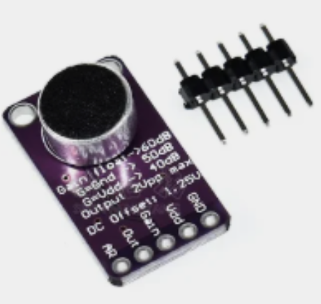
MAX9814 Microphone
Measures voice loudness and speaking intensity to help identify overuse, shouting and excessive vocal pressure.
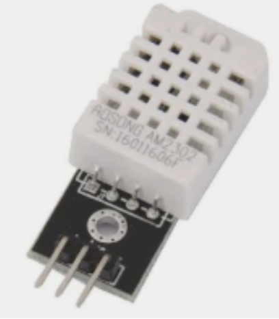
DHT22 Sensor
Measures temperature and humidity conditions to support hydration reminders and dryness detection.
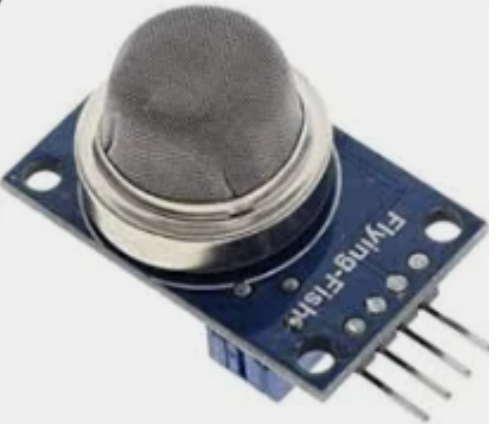
MQ135 Air Quality Sensor
Detects smoke, pollutants and poor air quality which may contribute to throat irritation and vocal discomfort.
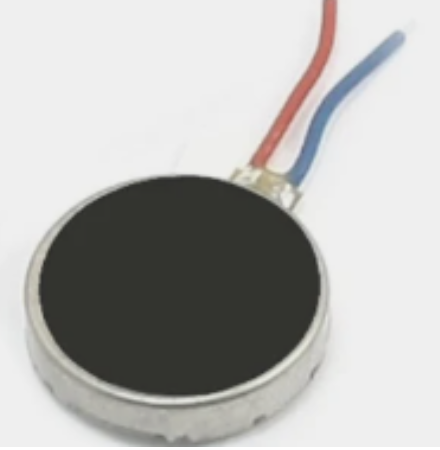
Coin Vibration Motor
Generates silent haptic feedback alerts for reminders and warnings without interrupting users.
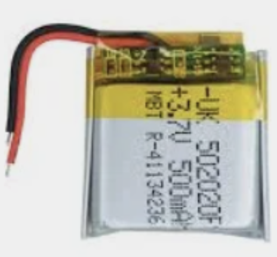
3.7V LiPo Battery
Powers the wearable system and enables portable usage during performances and long speaking sessions.
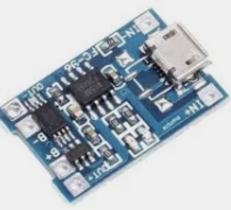
TP4056 Charging Module
Provides safe USB charging functionality for the wearable battery system.
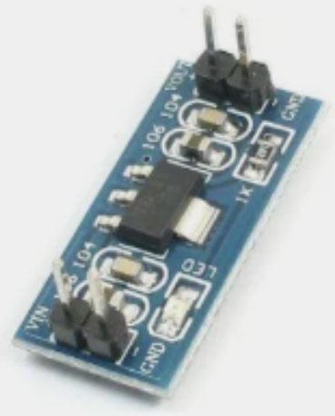
AMS1117 Voltage Regulator
Ensures stable 3.3V power delivery to the ESP32 and connected sensors.
System Assembly
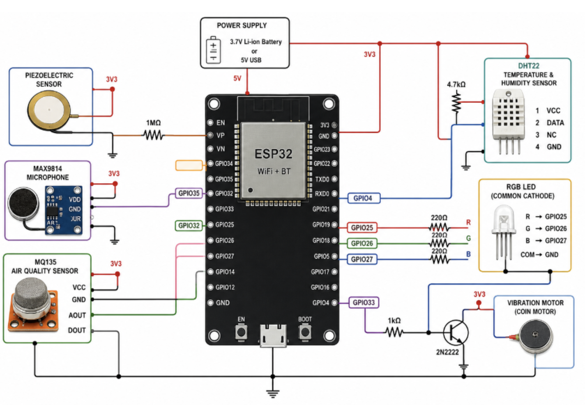
1
Velcro strap and foam layer create
a stable and comfortable wearable base.
2
MiniSense sensor is centrally positioned
for throat vibration sensing.
3
ESP32 is mounted as the central processing unit.
4
Sensors are positioned outward
for airflow and sound exposure.
5
Vibration motor provides discreet feedback alerts.
6
Wiring is routed along the strap
for compact wearable integration.
System Flow & Logic
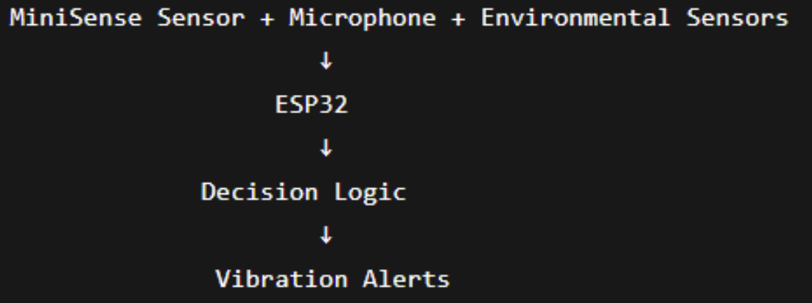
System Flow
Sensor data is continuously processed through the ESP32 to generate intelligent real-time alerts.
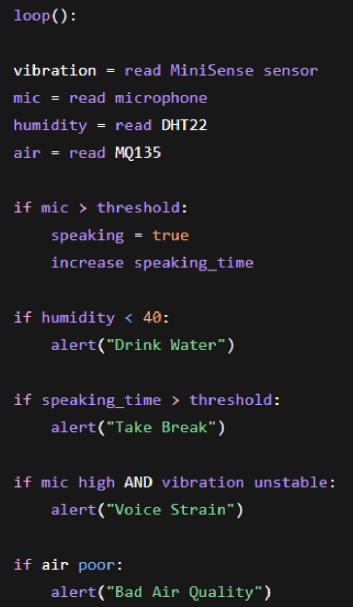
Decision Logic
The control logic evaluates vocal intensity, humidity, vibration patterns and air quality to trigger smart responses.
How the System Works
1. Data Acquisition
Collects throat vibration, voice intensity and environmental data.
2. Real-Time Processing
ESP32 filters noise and analyzes speaking duration and patterns.
3. Condition Detection
Detects prolonged speaking, strain indicators and poor conditions.
4. Smart Alerts
Generates vibration-based reminders and warnings.
5. User Response
Encourages healthier vocal habits through preventive feedback.
Smart Alerts
Hydration Alert
Trigger: Low humidity
Action: Drink water reminder
Benefit: Prevents dryness
Break Reminder
Trigger: Prolonged speaking
Action: Take a break
Benefit: Reduces fatigue
Voice Strain Warning
Trigger: High intensity + unstable vibration
Action: Reduce strain
Benefit: Prevents damage
Air Quality Alert
Trigger: Poor air quality
Action: Reduce exposure
Benefit: Protects throat health
Normal State
Trigger: Safe conditions
Action: No warning
Benefit: Healthy voice usage
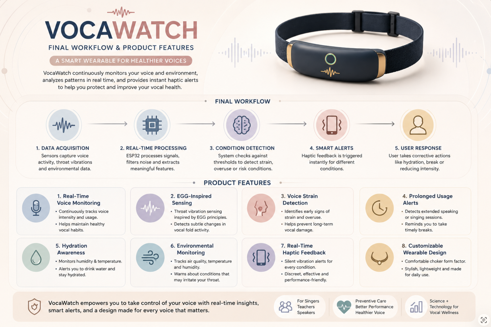
Machine Learning & AI Integration
Why Machine Learning?
- Traditional wearable systems rely on fixed thresholds and simple rule-based alerts.
- While effective for basic monitoring, these systems cannot fully adapt to different speaking styles, vocal habits, or environmental conditions.
- Machine learning allows VocaWatch to become more intelligent and personalized over time.
- AI can analyze patterns in vocal behavior and continuously improve prediction accuracy.
- Instead of reacting only after strain occurs, the system can identify early warning signs before serious vocal fatigue develops.
- Preventive feedback helps users protect their voice before long-term damage occurs.
How AI Improves the System
The machine learning system would learn from:
- Voice intensity patterns
- Throat vibration signals
- Speaking duration
- Environmental conditions
- User-specific vocal behavior
Over time, the model becomes capable of distinguishing between:
- Normal speaking
- Vocal fatigue
- Excessive strain
- Environmental irritation risks
- Recovery states
This transforms the wearable from a simple monitoring device into an adaptive vocal wellness assistant.
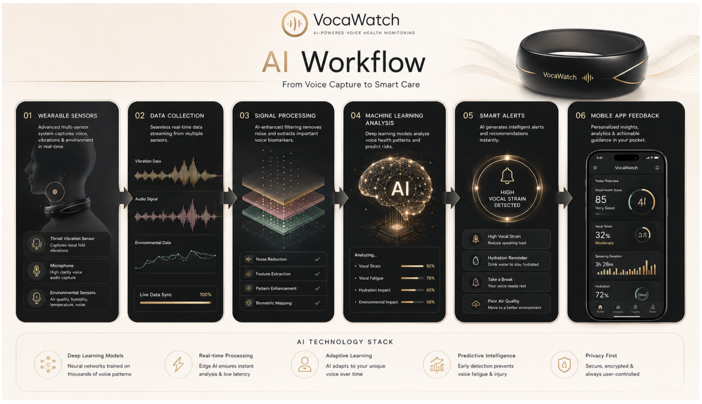
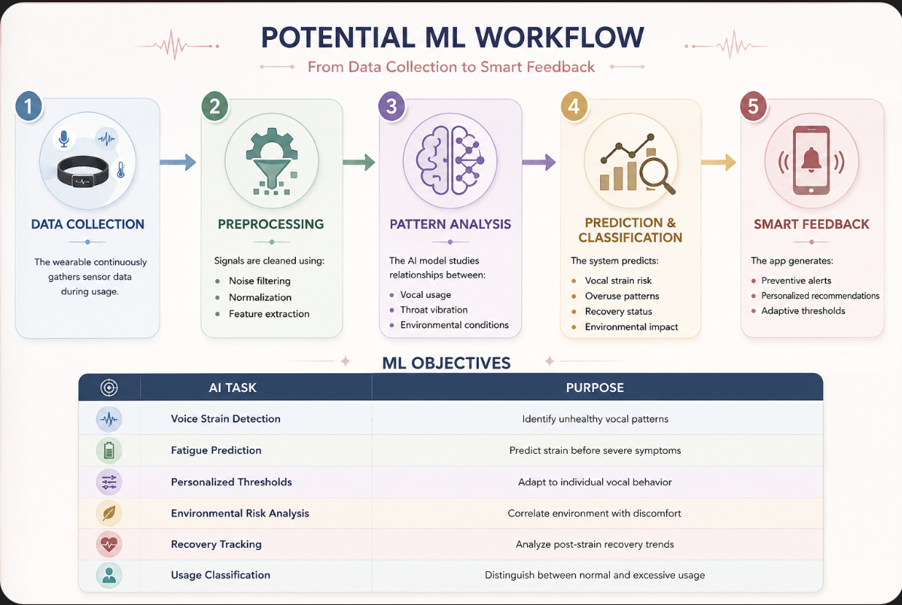
Current Limitations
- Limited testing sample size
- No medical diagnosis capability
- Prototype validation still required
Final Product Summary
VocaWatch combines wearable technology, intelligent sensing and preventive healthcare into a single user-centered platform. The system continuously monitors vocal activity and environmental conditions in real time, helping users respond before severe vocal strain occurs. Its modular architecture and wearable form also create future opportunities for personalization, mobile integration and expanded vocal analytics.
Smarter monitoring, healthier voices
and more accessible vocal care technology.
Reflection & Future Scope
The current prototype cannot diagnose vocal disorders directly and instead monitors indicators associated with vocal strain. Future versions may integrate machine learning models, personalized analytics, and improved wearable comfort.
The Impact
Expected impact of VocaWatch
The expected impact of this solution is to shift vocal health management from a reactive approach to a proactive one. Instead of recognizing vocal damage only after discomfort becomes severe, users can identify early warning signs and respond immediately.
This reduces the risk of long-term vocal strain, throat irritation, and potential voice disorders. The system also promotes consistent healthy habits such as proper voice usage, regular breaks, and hydration.
By providing objective, real-time feedback, it removes dependence on subjective self-assessment and increases awareness of how both voice usage and environmental conditions affect vocal health.
Overall, it aims to improve well-being, enhance performance quality, and support individuals who rely heavily on their voice in daily life.
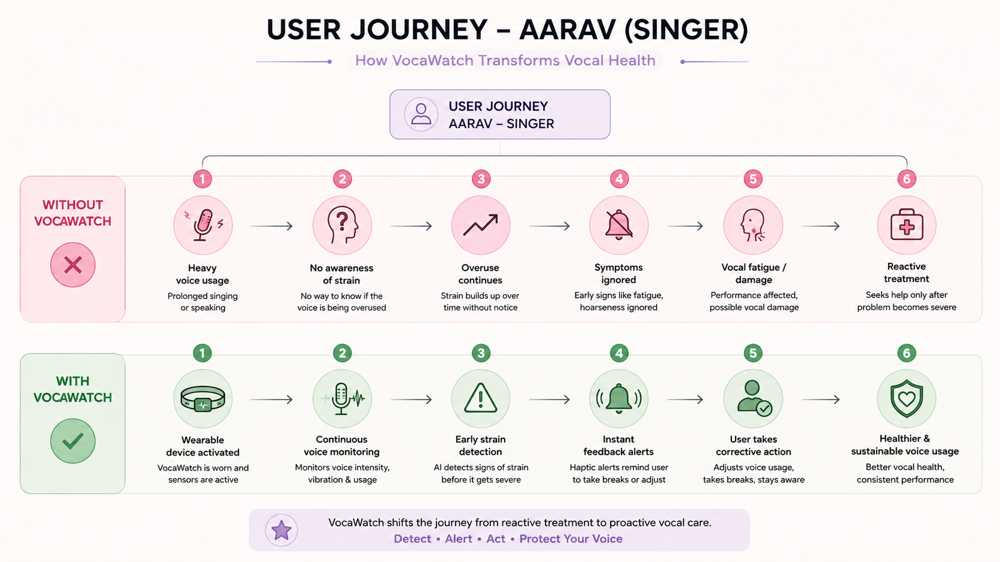
User Journey with the Product
A typical user begins by wearing the device during daily activities such as speaking, teaching, or singing. As they use their voice, the device continuously monitors vocal activity, throat vibrations, and surrounding environmental conditions like air quality and humidity.
When the system detects excessive voice usage, strain, or harmful conditions, it provides immediate feedback through simple alerts such as vibrations or light signals.
This prompts the user to take corrective actions, such as reducing voice intensity, taking breaks, or hydrating.
Over time, the user becomes more aware of their vocal habits and starts making better decisions naturally, leading to healthier and more sustainable voice usage without relying solely on guesswork.
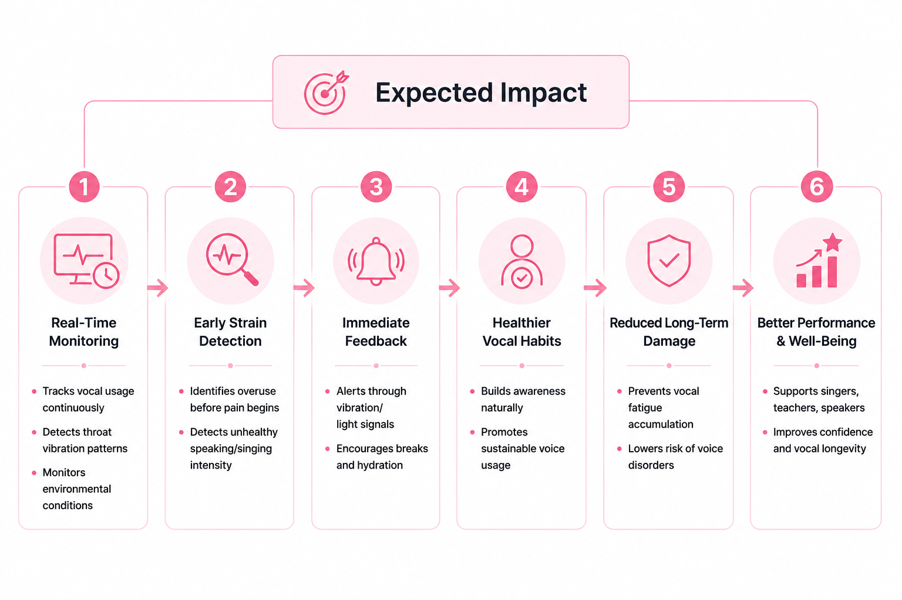
Real-Life Examples & Relevance
Vocal strain and voice-related injuries are not uncommon, even among highly trained professionals. For instance, Adele had to undergo surgery for a vocal cord hemorrhage after prolonged strain and intense performances. Similarly, Sam Smith experienced a vocal cord hemorrhage that forced them to cancel multiple tours and take complete vocal rest. John Mayer faced recurring issues with vocal cord granulomas, which significantly impacted his ability to perform and required long recovery periods.
These cases highlight a common pattern—continuous voice usage, high intensity, and delayed response to early warning signs. In many situations, symptoms such as hoarseness, throat dryness, or increased effort while singing appear early but are often overlooked until the condition becomes severe.
The ‘show must go on’ mentality often acts as a double-edged sword, where performers prioritize immediate obligations over long-term physiological health, effectively masking pain until it becomes a pathology.
A system that provides real-time monitoring and feedback could play a crucial role in such scenarios by making users more aware of these early signs. For example, if a singer during rehearsals is alerted about increasing vocal strain or unhealthy usage patterns, they can adjust their technique, take breaks, or prevent further damage.
While such a device cannot replace medical diagnosis or eliminate risk entirely, it can act as an early warning and awareness tool, helping reduce the likelihood of long-term vocal injury.
Beyond the stage, teachers face a parallel risk as they must constantly project over ambient classroom noise for hours on end. For these educators, a real-time monitoring tool could act as a vital safeguard, providing the feedback needed to prevent daily vocal fatigue from evolving into career-ending chronic conditions.
These examples demonstrate that vocal health is a significant concern even at the highest levels, reinforcing the need for accessible tools that support preventive care and informed voice usage.
References
- https://www.orlandoent.com/blog/adeles-vocal-cord-polyp-explained/
- https://www.researchgate.net/publication/377944725_Prevalence_of_Voice_Disorders_among_University_Teachers
- https://www.theguardian.com/music/2015/may/08/sam-smith-to-undergo-vocal-surgery
- https://www.researchgate.net/publication/315518255_Prevalence_of_Voice_Disorders_in_Singers_Systematic_Review_and_Meta-Analysis
Adele
Adele experienced a serious vocal injury in 2011 when she suffered a vocal cord hemorrhage, a condition where a blood vessel in the vocal cords ruptures due to excessive strain or overuse.
On advice from her throat doctor, she had to cancel the remaining two shows of her 123-show tour.
If a real-time vocal health monitoring device had been available, it could have detected excessive strain patterns early and alerted her to reduce vocal load or rest before the injury became severe.

References
- https://www.cbsnews.com/news/adele-opens-up-about-vocal-cord-surgery/
- https://publicwords.com/2017/08/29/adele-voice-vocal-surgery/
- https://throatdisorder.com/adele-surgery-voice/
John Mayer
John Mayer was diagnosed with a granuloma multiple times next to his vocal cords which had caused him to cancel his singing engagements and postpone the release of an album.
When large, granulomas may cause difficulty speaking or singing, or even hoarseness.
Granulomas occur due to numerous causes, including voice overuse, acid reflux from the stomach or even just a recent cough.
A wearable monitoring system capable of tracking throat stress and environmental triggers could have helped identify unhealthy vocal usage and irritation earlier, encouraging preventive action before the condition significantly affected his career.
References
- https://johnmayer.info/subjects/throat-condition
- https://throatdisorder.com/john-mayer-diagnosed-granuloma/
- https://www.ohniww.org/john-mayer-granuloma-voice-surgery/
Long Term Vision
Future Integration & Expansion Possibilities
Smart Mobile Application Integration
As a future enhancement, the wearable system can be integrated with a dedicated mobile application to provide a more personalized and interactive user experience. The ESP32’s built-in Bluetooth and Wi-Fi capabilities enable seamless wireless communication between the wearable device and the application.
The mobile application would act as a centralized platform where users can:
- View live vocal activity data
- Monitor speaking duration and intensity trends
- Track hydration reminders and vocal strain alerts
- Analyze environmental conditions affecting vocal health
- Receive personalized recommendations
- Store long-term vocal health history
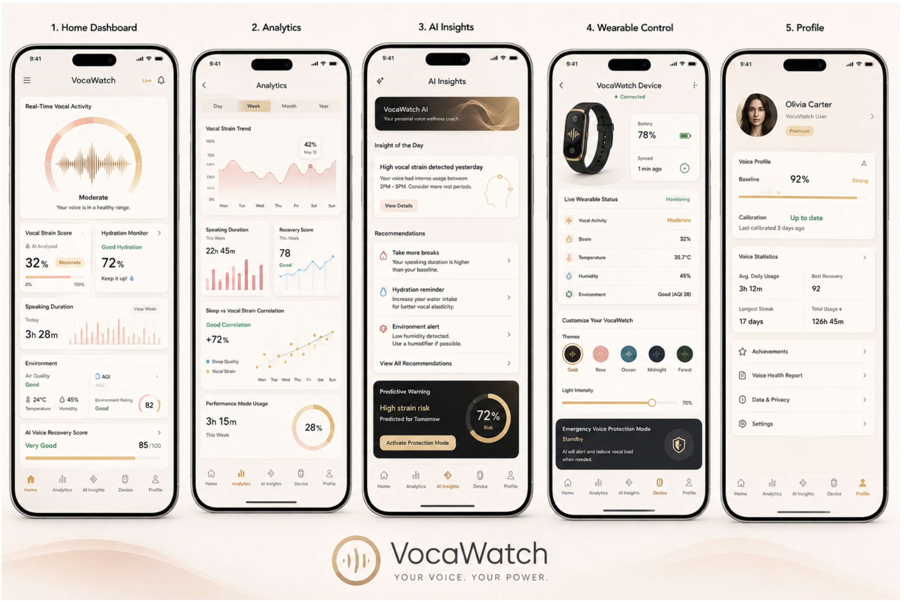
VocaWatch Mobile Application
The VocaWatch mobile application serves as the intelligent companion platform for the wearable device, extending its functionality through real-time monitoring, analytics, and personalized vocal wellness insights. Designed with a modern and user-friendly interface, the application allows users to seamlessly interact with their wearable system and better understand their vocal health patterns.
The app connects wirelessly to the VocaWatch wearable through Bluetooth or Wi-Fi, enabling continuous synchronization of sensor data. This allows users to monitor vocal activity, environmental conditions, and system alerts directly from their smartphone in real time.
Core Functionality
The application continuously receives and processes data collected from the wearable device, including:
- Throat vibration activity
- Voice intensity levels
- Speaking duration
- Humidity and temperature conditions
- Air quality measurements
Using this data, the app generates intelligent insights and personalized feedback to help users maintain healthier vocal habits.
Real-Time Vocal Monitoring
The dashboard provides live monitoring of:
- Vocal intensity
- Speaking duration
- Strain indicators
- Environmental conditions
Users can visualize their voice activity through interactive graphs, waveforms, and wellness indicators, making complex vocal data easy to understand.
Smart Alerts & Notifications
The app enhances the wearable feedback system through smart notifications such as:
- Hydration reminders
- Break recommendations
- Vocal strain warnings
- Poor air quality alerts
- Excessive voice usage notifications
These alerts are designed to encourage proactive voice care and reduce long-term vocal fatigue.
AI-Powered Insights
Future versions of the application aim to integrate machine learning algorithms capable of learning user-specific vocal patterns over time. This would allow the system to:
- Predict vocal strain before it occurs
- Adapt thresholds based on individual usage
- Generate personalized wellness recommendations
- Track long-term recovery and improvement trends
The AI system would continuously improve through repeated usage and data analysis.
Analytics & History Tracking
The application maintains historical records of:
- Daily speaking duration
- Frequency of strain alerts
- Hydration reminders
- Environmental exposure conditions
- Voice wellness trends over time
This enables users to identify patterns, monitor improvement, and better understand factors affecting their vocal health.
Customizable User Experience
The application is designed to provide a customizable and interactive experience:
- Adjustable notification settings
- Personalized wellness goals
- Wearable customization options
- Theme and appearance settings
- User-specific calibration profiles
This ensures that the platform remains both functional and adaptable to different user preferences.
Future Integration Possibilities
Potential future integrations include:
- Cloud-based data storage
- Cross-device synchronization
- Smart assistant integration
- Professional performance tracking modes
- AI-generated vocal wellness reports
- Telehealth and clinician support systems
These enhancements would allow VocaWatch to evolve into a comprehensive vocal wellness ecosystem rather than just a standalone wearable device.
Future Smart Features
Potential future capabilities include:
- AI-generated vocal wellness reports
- Voice fatigue prediction before strain occurs
- Personalized hydration schedules
- Vocal recovery tracking
- Smart assistant integration
- Performance mode for singers and speakers
- Cloud-based vocal analytics

Long-Term Vision
The long-term goal is to evolve VocaWatch into an intelligent AI-assisted vocal wellness platform capable of providing predictive, personalized, and preventive voice care through wearable technology.
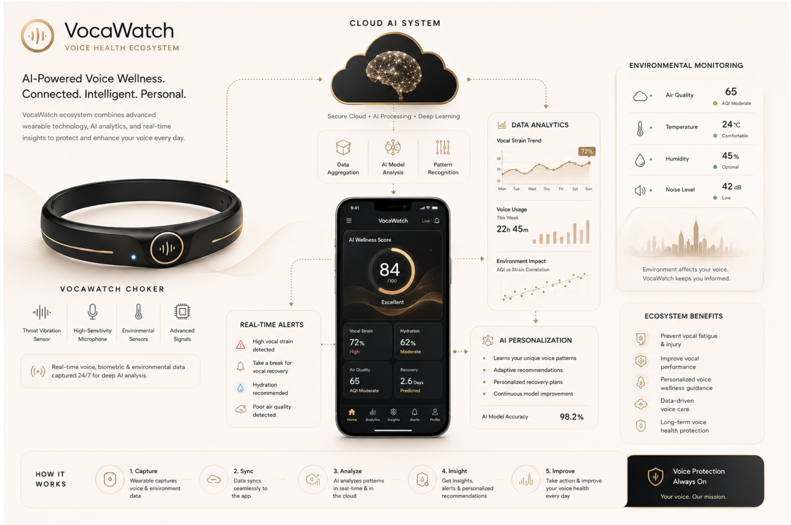
Our Team
Prautojnautos
We are a multidisciplinary team of six students from the fields of Computation & Mathematics, Computation & Biology, and Aerospace Engineering, brought together by a shared interest in healthcare technology and user-centered innovation.
Combining skills in programming, data analysis, sensing systems, and problem-solving, we collaborated to develop a wearable solution focused on vocal and throat health monitoring.
Our goal is to create technology that not only detects vocal strain and environmental risks in real time, but also encourages preventive care and healthier voice usage in everyday life.
Why We Chose This Problem
We chose this problem because vocal health is often overlooked despite being essential in everyday life and many professions.
Through our research, we found that people frequently ignore early signs of vocal strain and lack access to tools that provide real-time awareness and preventive support.
This motivated us to explore a wearable solution that could help users better understand and protect their vocal health before serious issues develop.
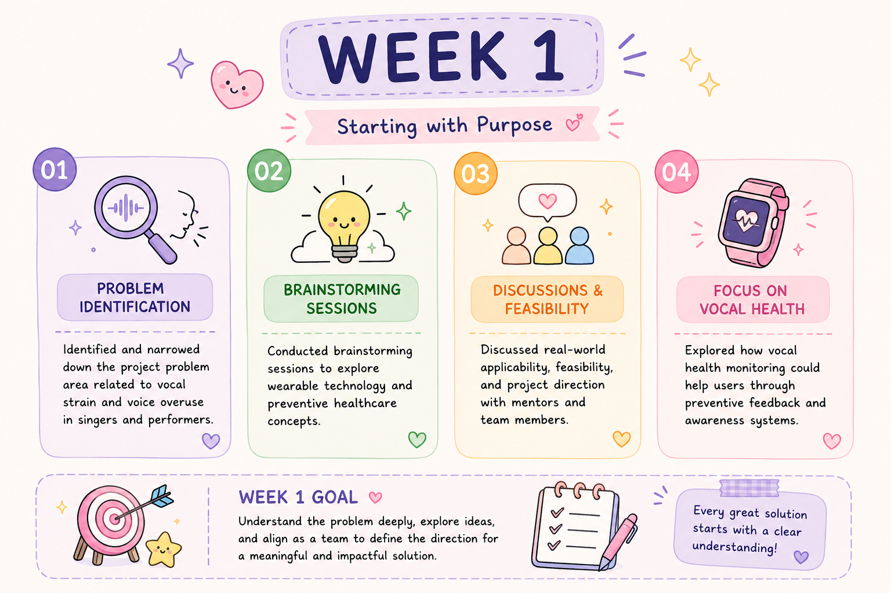
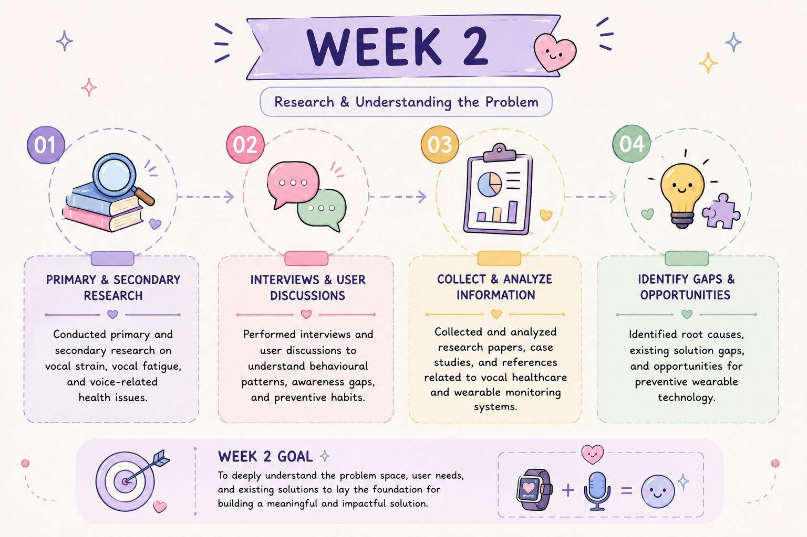
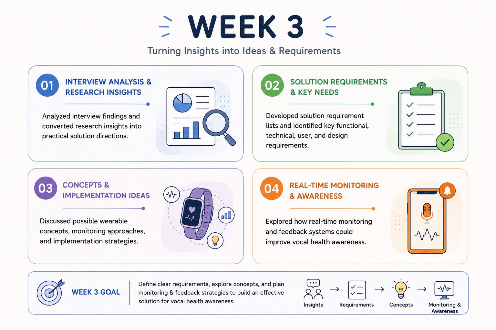
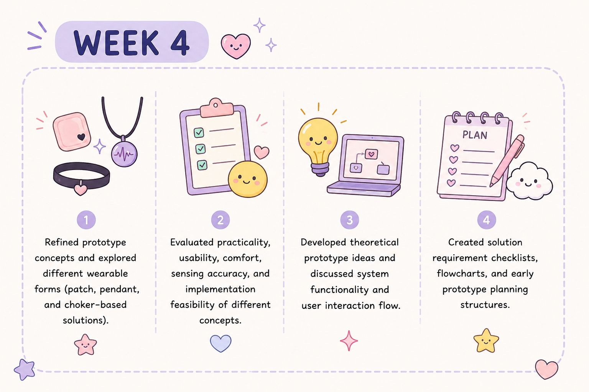
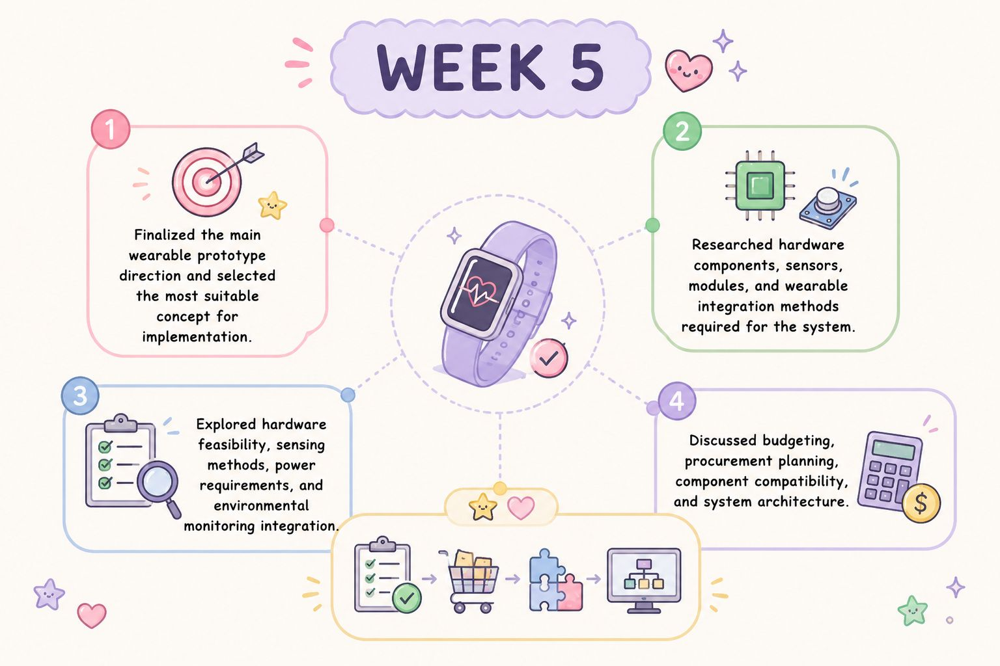
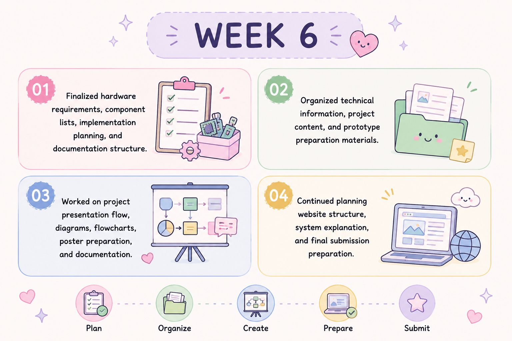
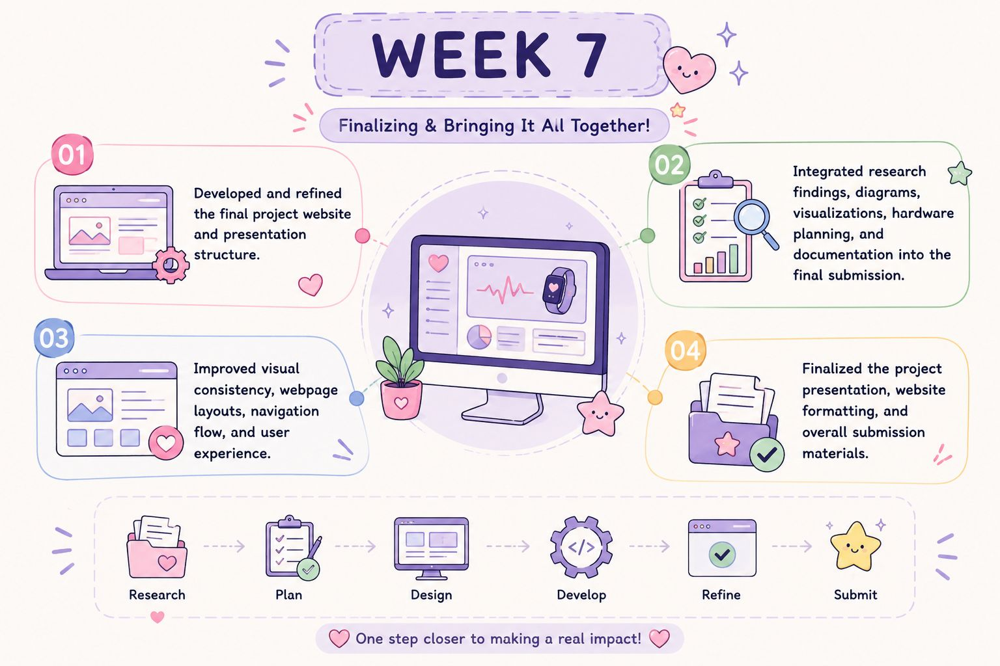
Team Members
Gubba Meenakshi Kishan
Team Lead
Pronouns: She/Her
Course: B.Tech Computational Biology
Interests: Building ML models, genomics, and data-driven healthcare solutions
Expertise: Python, C, C++, R, HTML/CSS, Data Science
Strengths: Problem Solving, Creative Thinking, Collaboration & Leadership, Analytical Reasoning
Role in Project: Project Ideation & Direction, Team Coordination, Website Design & Development, Research Synthesis, Visual System Design, Presentation Structuring, and Mentor Coordination
About Me: Curious about the intersection of biology, data, and healthcare, I enjoy exploring how computational tools can help solve real-world healthcare challenges and improve understanding of hereditary diseases.
My Overall Contributions
Presentation & Final Submission
• Helped structure the overall presentation flow and final submission format.
• Worked on organizing research, diagrams, and visuals into a clear and connected narrative.
• Refined layouts, section hierarchy, and visual consistency across the website.
• Assisted in improving readability, navigation, and overall presentation clarity.
• Contributed to compiling weekly work, flowcharts, and supporting materials into the final project documentation.
Project Ideation & Coordination
• Proposed the original project concept focused on vocal health monitoring for singers and speakers.
• Led the overall project direction, coordination, and workflow management.
• Coordinated with professors, mentors, and external technical guidance resources.
• Managed compilation and integration of team contributions into the final submission.
Website Design & Development
• Designed and developed the complete project website interface using HTML/CSS.
• Created the visual identity, layout system, pastel theme, and overall user experience design.
• Structured the narrative flow and navigation flow of the website.
• Designed and integrated the Contact Us form.
Research & Design Analysis
• Led the research synthesis process by converting findings into structured insights and design opportunities.
• Helped organize and present research findings into a clear design-thinking workflow.
Visual Systems & Diagrams
• Developed major diagrams and system visuals including:
• Persona
• Empathy Map
• Pain Points
• User Journey
• Solution Requirement List
• Workflow and system architecture diagrams
Week 1
What did I learn?
I learnt that ideas need to be practical, focused, and achievable within the available time and resources. I also understood how important early problem definition is in shaping the direction of the entire project. This session helped me realize that smaller and more specific healthcare solutions can often create stronger real-world impact.
What work did I do?
I proposed the initial project idea focused on vocal strain and wearable healthcare technology for singers and speakers. I helped guide the team discussions toward selecting a focused and realistic problem area. I also contributed to narrowing broad concepts into a clearer wearable vocal health monitoring solution direction.
Attended meeting? ✔
Week 2
What did I learn?
This session helped me understand that we were focusing too much on building a solution instead of properly understanding the problem first.
• Design thinking requires deeper problem exploration before product development.
• Understanding root causes and user behaviour is essential before ideation.
• Breaking the problem into smaller focused research areas improves clarity and teamwork.
• Proper research helps create more meaningful and practical solutions.
What work did I do?
After realizing our approach had become too solution-oriented, I helped redirect the team’s focus back toward research and problem analysis.
• Coordinated the overall research direction for the team.
• Assigned different members specific areas of the problem to research.
• Helped structure and organize the collected findings.
• Contributed to developing the overall problem exploration flowcharts and diagrams.
• Assisted in connecting different research findings into a clearer project direction.


Attended meeting? ✔
Week 3
What did I learn?
This week helped me understand how structured design analysis and user mapping techniques can simplify complex research findings into clearer problem insights.
• Visual systems like empathy maps and personas help organize user behaviour more effectively.
• User frustrations and emotional responses are important for identifying meaningful opportunities.
• Clear visual communication improves understanding across the entire team.
• Design frameworks help transform scattered research into actionable insights.
• Structured diagrams make presentations and explanations easier for viewers to follow.
What work did I do?
I contributed toward organizing research findings into structured visual systems and helped refine the overall design-thinking workflow for the project.
• Worked on developing and refining empathy maps and user behaviour flowcharts.
• Helped organize pain points and behavioural patterns identified from interviews.
• Assisted in structuring the persona and user journey frameworks.
• Contributed to improving the clarity and presentation flow of research diagrams.
• Helped connect multiple research findings into a more cohesive project direction.
• Participated in collaborative discussions to refine the visual storytelling approach of the website and presentation.
Interview Transcripts and Analysis: View Supporting Documents
Attended meeting? ✔
Week 4
What did I learn?
This session helped me understand how research findings can be converted into actual solution requirements and design directions.
• A solution must directly address the gaps identified during research.
• User behaviour and pain points should guide product requirements.
• Different solution ideas can emerge from the same research insights.
• A strong requirement checklist helps keep solutions practical and user-focused.
• Design decisions should balance functionality, usability, and feasibility.
What work did I do?

I contributed to developing and organizing the solution requirement checklist based on our earlier research findings.
• Helped compile and connect insights from primary and secondary research.
• Contributed to creating additional flowcharts for pain points, research analysis, and solution requirements.
• Read and referred to multiple research papers to strengthen the project findings and flowcharts.
• Assisted in identifying the key features and expectations the final solution should satisfy.
• Helped structure the requirements into categories such as monitoring, alerts, usability, awareness, and behavioural support.
• Contributed to brainstorming and evaluating multiple theoretical solution concepts as a team.
• Helped ensure the proposed solutions remained connected to the original problem and user needs.
Attended meeting? ✔
Week 5
What did I learn?
This session helped me understand the importance of narrowing multiple concepts into one focused and practical solution direction.
• A project becomes more effective when the team commits to one clear prototype idea.
• Product feasibility depends not only on the idea, but also on implementation and integration.
• Hardware, sensors, and software systems must work together as a complete system.
• Building a realistic prototype requires understanding components, assembly, and usability.
• Visual organization and structured flowcharts help simplify complex ideas and research.
What work did I do?
I contributed to organizing and refining the final solution direction and supporting research material.
• Combined all the individual solution requirement checklists into one final structured version.
• Helped organize and refine the selected prototype direction for the team.
• Created additional flowcharts for persona analysis, empathy maps, and research insights.
• Continued improving and expanding the research visuals from previous sessions.
• Assisted in connecting research findings directly with the final prototype requirements.
• Helped structure information needed for the website and overall project presentation.
• Contributed to discussions regarding hardware components, implementation planning, and system integration.
Attended meeting? ✔
Week 6
What did I learn?
This session helped me understand the importance of refining ideas using expert feedback and preparing the project for final implementation.
• Expert inputs help improve the practicality of the solution.
• Prototype planning requires understanding components and assembly clearly.
• Final presentation quality is important for communicating the project effectively.
• Organizing and compiling work properly improves the overall project flow.
What work did I do?
I contributed to refining the prototype direction and preparing the final submission materials.
• Spoke with Venkat sir and noted the changes suggested based on his expertise.
• Created a basic assembly flowchart for the hardware components.
• Discussed component requirements and ordering plans with Raj sir.
• Helped compile and organize the project flowcharts and research work.
• Found a suitable poster template for the final submission.
• Started developing the final project website for presentation and submission.
Attended meeting? ✔
Week 7 - Final Submission
What work did I do?
I mainly focused on developing and refining the final submission website and compiling the complete project work together.
• Designed and modified the layouts for almost all sections of the website.
• Worked on the HTML structure, styling, and overall webpage organization.
• Compiled research findings, diagrams, flowcharts, and written content into a structured final format.
• Created and refined multiple visual flowcharts and research diagrams used throughout the project.
• Organized the navigation, visual consistency, and presentation flow of the website.
• Coordinated the integration of different team contributions into the final submission.
• Continued improving the final design, formatting, and overall user experience of the project presentation.
Final Design & Website Planning Files: View Final Freeform Board
Attended meeting? ✔
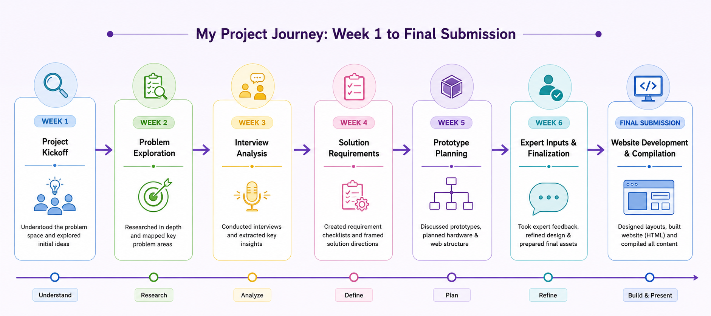


Anvi Patchigolla
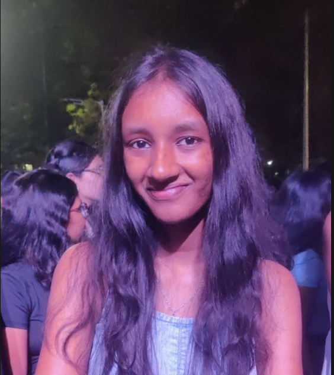
Pronouns: She/Her
Course: B.Tech Computation and Mathematics
Interests: Reading, Music
Expertise: Python, Mathematics, C, MATLAB
Strengths: Logical Reasoning, Problem Solving, Research & Analysis, Attention to Detail
Role in Project: Primary Research, Hardware Research & Planning, Prototype Development, Case Study Research, User Insight & Impact Analysis
About Me: A curious and analytical individual with strong problem-solving, research, and coordination skills, along with a deep interest in mathematics, coding, and innovative technologies. Passionate about exploring interdisciplinary ideas and developing practical, user-focused solutions through logical thinking and creativity.
My Overall Contributions
Research & User Analysis
• Conducted primary research on vocal strain, vocal fatigue, and throat-related issues in daily voice users.
• Analyzed user behaviours, symptoms, preventive practices, and awareness gaps through interviews and research findings.
• Helped identify gaps in existing vocal health monitoring systems.
• Contributed to user insight analysis and problem understanding.
Hardware Research & Prototype Planning
• Researched sensors and hardware components suitable for the wearable prototype.
• Evaluated components based on functionality, compatibility, and feasibility.
• Contributed to planning voice sensing, environmental monitoring, alerts, and power management systems.
• Participated in refining one of the wearable prototype concepts.
Case Study & Literature Research
• Researched real-world case studies related to vocal strain and long-term vocal injuries.
• Connected research findings with the relevance and impact of the proposed solution.
• Conducted literature review and collected supporting references and research papers.
Impact Analysis & Documentation
• Contributed to impact analysis and real-world application research.
• Helped develop research content, flowcharts, and insight mapping diagrams.
• Assisted in documentation and structured presentation of research findings for the final submission.
Week 1
What did I learn?
I learned the importance of narrowing down to a specific, real world problem instead of trying to tackle something too ambitious. I understood that focusing on a smaller specific issue makes it easier to design a feasible solution.
What work did I do?
• Discussed with sir what exactly had to be done.
• Explored the idea of helping singers.
Attended meeting? ✔
Week 2
What did I learn?
I learned that the purpose of the course is not to focus on just one solution immediately, but to first understand the problem properly and explore multiple possible solutions before deciding on the best one.
What work did I do?
• Participated in discussions with Raj sir regarding problem exploration and solution ideation.
• Helped explore multiple possible directions and ideas related to the project problem.
Attended meeting? ✗
Week 3
What did I learn?
I learned that many singers and performers only recognize vocal strain after damage has already started. I also understood how subjective awareness and delayed reactions contribute to long-term vocal problems.
What work did I do?
• Conducted research on singers and performers who experienced vocal injuries and strain-related issues.
• Researched real-world vocal health cases involving overuse, hemorrhage, and vocal fatigue.
• Analyzed how delayed awareness and lack of monitoring contribute to vocal damage.
• Helped connect these findings with the importance of preventive monitoring systems.
• Continued contributing to research discussions and problem understanding despite being unable to attend physically.
Supporting Research Document: View Research Document
Attended meeting? ✔
Week 4
What did I learn?
I learned how to prioritize solution requirements and identify which features are actually necessary for solving the problem effectively. I also understood how analyzing one problem from different perspectives helps generate multiple possible solutions before selecting the best one.
What did I do?

• Worked on developing a solution requirement checklist based on earlier research findings.
• Contributed to discussions related to theoretical prototype ideas and possible wearable solutions.
• Helped explore different approaches for solving the identified vocal health problem.
• Participated in organizing requirements related to functionality, usability, and implementation feasibility.
Prototype Idea Document: View Prototype Document
Attended meeting? ✔
Week 5
What did I learn?
I learned that selecting one focused prototype concept helps make the project more practical and achievable. I also understood the importance of researching hardware feasibility and understanding what materials would actually be required to build the prototype.
What work did I do?
• Participated in discussions to finalize the most suitable theoretical prototype concept.
• Researched the hardware components and materials required for building the wearable prototype.
• Explored implementation feasibility since the project involved electronics and sensing systems outside our branch background.
• Helped identify basic prototype requirements and possible hardware integration needs.
Attended meeting? ✔
Week 6
What did I learn?
I learned how prototype planning also involves budgeting, procurement, and organizing hardware requirements practically before implementation begins.
What work did I do?
• Helped prepare and present the final hardware requirement list for the prototype.
• Worked on estimating the budget and identifying suitable methods for procuring materials.
• Participated in discussions related to prototype planning and implementation preparation.
• Contributed to organizing hardware-related information for the final submission and documentation.
Attended meeting? ✔


Sathvic Dass
Pronouns: He/Him
Course: B.Tech Aerospace Engineering
Interests: Sketching, Music, Gym, Basketball and Football
Expertise: MATLAB, ANSYS, Computational Fluid Dynamics, C, Thermodynamics and Aerodynamics, Calculus and Differential Equations
Strengths: Creativity, Analytical Thinking, Team Collaboration, Problem Solving, Visual Communication
Role in Project: Research & Analysis, Design & Presentation, Branding, Poster Formulation, Collaboration & Coordination
About Me: A creative and research-oriented individual with interests in design, analysis, and problem-solving. Passionate about combining technical understanding with visual presentation and collaborative thinking to contribute toward practical and user-focused solutions.
My Overall Contributions
Research & Analysis
• Contributed to identifying root causes and behavioural aspects related to vocal strain and voice overuse.
• Conducted interviews, documented responses, and analyzed recurring user patterns and symptoms.
• Participated in both primary and secondary research activities.
Design & Presentation
• Designed the project logo and contributed to product naming ideas.
• Helped create the solution requirement checklist flowchart.
• Contributed significantly to poster formulation and overall visual presentation.
Collaboration & Coordination
• Coordinated with team members during discussions related to branding, logos, and presentation decisions.
• Contributed ideas during early-stage solution discussions and concept refinement.
• Worked collaboratively on design-related decisions and presentation structure.
Week 1
What did I learn?
I learned that understanding user behaviour and the actual problem is important before developing solutions. I also understood how wearable technology can become a practical way to provide real-time feedback and prevent vocal strain.
What work did I do?
• Participated in deciding the wearable vocal health monitoring concept for singers.
• Contributed to early discussions related to problem understanding and wearable solutions.
• Helped explore how wearable devices could assist in preventing vocal strain through monitoring and feedback.
Attended meeting? ✔
Week 2
What did I learn?
I learned that design thinking should be solution-agnostic and focused more on understanding the root cause of the problem before finalizing solutions.
What work did I do?
• Started researching the root causes behind vocal strain and voice loss in singers.
• Focused on understanding why singers lose their voice and how behaviour contributes to strain.
• Helped shift the research focus from solution-building to deeper problem analysis.
Research Link: View Research Document
Attended meeting? ✔
Week 3
What did I learn?
I learned that interviews and direct user insights help reveal real behavioural patterns, awareness gaps, and preventive habits related to vocal strain.
What work did I do?
• Conducted interviews with singers and students to understand vocal strain experiences and habits.
• Analyzed common symptoms, user behaviour, and awareness regarding vocal health.
• Helped identify gaps in vocal care knowledge and preventive practices.
• Contributed to research analysis related to user behaviour and vocal strain patterns.
Interview Analysis Link: View Interview Analysis
Attended meeting? ✔
Week 4
What did I learn?
I learned how solution requirement checklists help convert research findings into practical solution directions and structured prototype planning.
What work did I do?

• Contributed to developing the solution requirement checklist based on interview findings and research insights.
• Helped organize requirements needed for the final wearable solution.
• Participated in discussions related to theoretical prototype ideas and possible implementations.
Work Link: View Work Document
Attended meeting? ✔
Week 5
What did I learn?
I learned that narrowing multiple ideas into one focused prototype direction helps make implementation and hardware planning more practical.
What work did I do?
• Participated in discussions to finalize the main prototype concept.
• Helped focus on the blueprint, hardware planning, and budget estimation for the wearable system.
• Contributed to discussions related to electronics and hardware requirements for the prototype.
Attended meeting? ✔
Week 6
What did I learn?
I learned how hardware procurement and component availability are important practical aspects of prototype development.
What work did I do?
• Helped identify and organize the electronics and hardware required for the project.
• Participated in procurement-related discussions and hardware planning activities.
• Contributed to implementation preparation for the wearable prototype system.
Attended meeting? ✔
Prajnaa M
Pronouns: She/Her
Course: B.Tech Computation and Mathematics
Interests: Reading, Art, Athletics, Chess
Expertise: SQL, Python, Mathematics, C, R
Strengths: Analytical thinking, Creativity with practicality, Adaptability, Balance of logic and aesthetics
Role in Project: Secondary Research, Content Writing, Product Design and Visualisation, Hardware Functions and Electrical Circuit of Prototype, ML Aspect, Future Integration and Flowcharts
About Me: A naturally inquisitive and thoughtful individual with a strong interest in problem-solving, technology, and analytical thinking. Drawn to ideas that connect logic, creativity, and real-world application, with experience exploring projects related to coding, optimization, and research. Passionate about business and data analytics and like exploring ideas that combine creativity with practical thinking.
My Overall Contributions
Product Design & Visualisation
• Contributed to the choker-style wearable concept with focus on functionality, comfort, and performer aesthetics.
• Helped create product visualisations, prototype renders, and system workflow diagrams.
• Contributed content and visuals for the “Our Product” and “Future Integration” sections.
Hardware & Technical Research
• Conducted secondary research on wearable vocal monitoring systems and EGG principles.
• Researched hardware components, electrical requirements, and implementation feasibility.
• Contributed to AI/ML workflow concepts, smart alerts, and future mobile app integration ideas.
Collaboration & System Development
• Collaborated during feature planning, hardware discussions, and final solution refinement.
• Helped expand the project into a more complete smart vocal wellness ecosystem through future integration and user-focused feature development.
Product Visualisation & Flow Design
• Created and contributed to product visualisations, prototype concept renders, and system workflow diagrams.
• Helped develop logic flow diagrams, AI/ML workflow concepts, and product presentation visuals.
• Contributed content and visuals for the “Our Product/Solution” and “Future Integration” sections.
Week 1
What did I learn?
I learned how brainstorming and collaborative discussions help in identifying practical real-world problems that technology can solve. I also understood how wearable systems can provide real-time feedback and help prevent vocal strain.
What work did I do?
• Participated in brainstorming discussions related to wearable healthcare solutions for singers.
• Contributed to understanding the design thinking process and problem identification.
• Helped explore how wearable devices could assist users through monitoring and preventive feedback.
Attended meeting? ✔
Week 2
What did I learn?
I learned that the project should focus more on understanding the root problem rather than directly jumping into solutions.
What work did I do?
• Researched the root causes behind vocal strain and voice loss in singers.
• Helped analyze why singers continue vocal overuse despite early symptoms.
• Contributed to shifting the focus toward deeper problem understanding and research analysis.
Research Link: View Research Document
Attended meeting? ✔
Week 3
What did I learn?
I learned how interviews help reveal actual user behaviour, awareness gaps, and recurring patterns related to vocal strain.
What work did I do?
• Conducted and analyzed interviews with singers and students regarding vocal strain and vocal care habits.
• Identified common symptoms, behaviour patterns, and awareness gaps related to vocal fatigue.
• Contributed to interview analysis and research documentation.
• Helped identify the need for accessible real-time monitoring systems.
Interview Analysis Links:
Attended meeting? ✔
Week 4
What did I learn?
I learned how research findings are converted into solution requirements and theoretical prototype planning.
What work did I do?
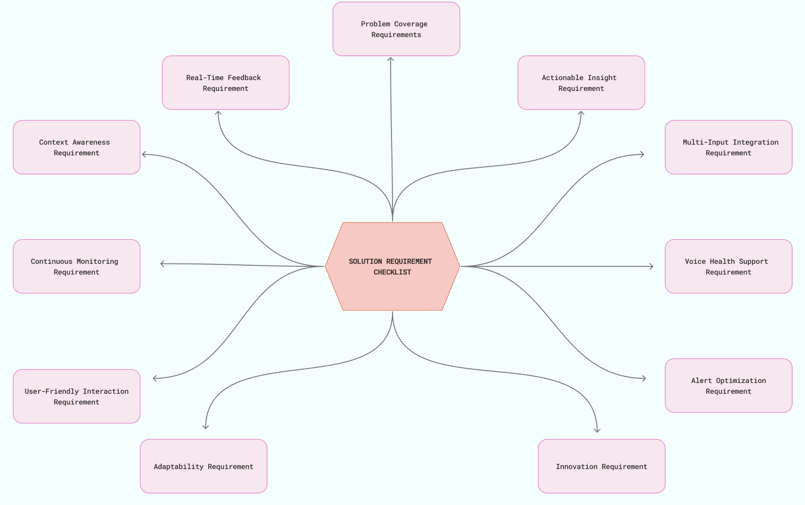
• Contributed to developing the solution requirement checklist for the wearable system.
• Participated in discussions related to possible solution directions and implementation planning.
• Helped organize solution requirements based on earlier research findings.
Work Link: View Work Document
Attended meeting? ✔
Week 5
What did I learn?
I learned how prototype feasibility depends on hardware planning, component compatibility, budgeting, and assembly understanding.
What work did I do?
• Researched hardware components, sensors, and procurement options required for the prototype.
• Prepared approximate budget estimations for the selected components.
• Studied how sensors and modules would work together in the final wearable system.
• Explored materials and mounting methods for constructing the wearable choker prototype.
Hardware Planning Link: View Hardware Planning Document
Attended meeting? ✔
Week 6
What did I learn?
I learned how finalizing hardware requirements and documentation helps prepare the project for implementation and presentation.
What work did I do?
• Helped finalize the hardware component list and estimated budget for the prototype.
• Participated in discussions related to feasibility, documentation, and project planning.
• Contributed toward organizing technical requirements and poster preparation content.
• Assisted in planning the next steps for prototype development and assembly.
Attended meeting? ✔
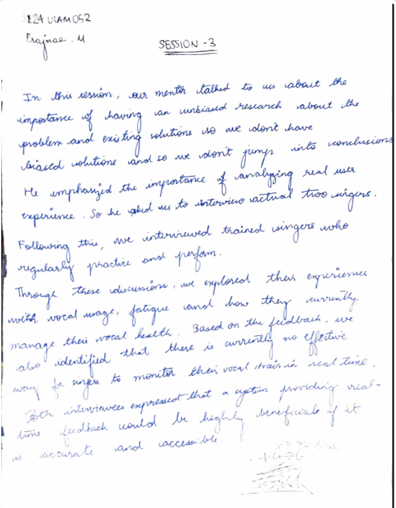
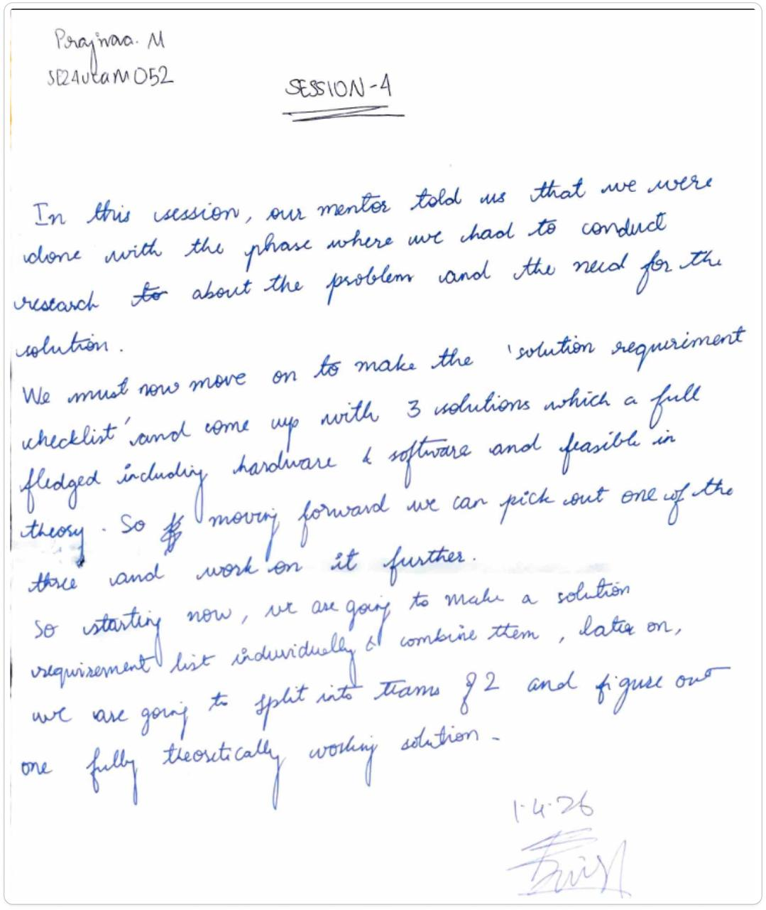
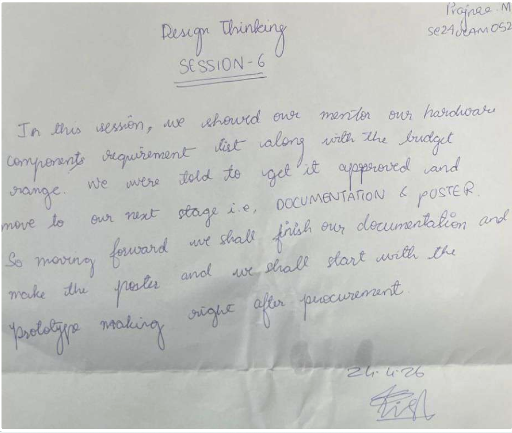
Muvva S
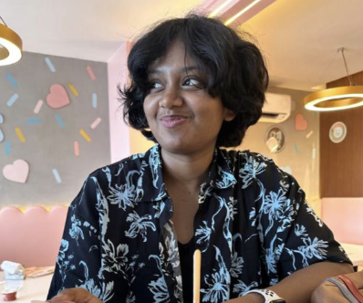
Pronouns: She/Her
Course: B.Tech Computation and Mathematics
Interests: Mathematics, Coding, Research, Innovative Technologies
Expertise: Python, Mathematics, Research Analysis, Problem Solving
Strengths: Analytical Thinking, Logical Reasoning, Research & Coordination, Creativity
Role in Project: Primary Research, User Insight Analysis, Prototype Planning, Hardware Research, Solution Requirement Analysis
About Me: A curious and analytical individual with strong problem-solving, research, and coordination skills, along with a deep interest in mathematics, coding, and innovative technologies. Passionate about exploring interdisciplinary ideas and developing practical, user-focused solutions through logical thinking and creativity.
My Overall Contributions
Research & User Analysis
• Contributed to early-stage discussions and ideation for the wearable vocal health monitoring project.
• Conducted research on vocal strain, early symptom neglect, and behavioural patterns among singers and performers.
• Conducted interviews with singers to understand vocal strain experiences, awareness gaps, and preventive behaviours.
• Helped identify the importance of real-time feedback and monitoring in preventing long-term vocal damage.
Solution Development & Prototype Planning
• Contributed to solution requirement planning and feature identification for the wearable prototype.
• Participated in discussions related to prototype feasibility, practicality, and usability.
• Collaborated in developing a wearable adhesive patch concept designed to monitor vocal vibrations from the neck area.
• Assisted in evaluating the practicality and implementation feasibility of the proposed prototype solution.
Research Documentation & Analysis
• Contributed to user insight analysis and interpretation of interview findings.
• Helped connect research findings with practical wearable technology solutions.
• Participated in prototype planning discussions and hardware requirement exploration.
• Assisted in organizing research findings and documenting solution-related ideas for the project.
Week 1
What did I learn?
I learned the importance of collaborative brainstorming and how discussing ideas from different perspectives helps shape a meaningful and practical project direction.
What work did I do?
• Participated in group discussions to finalize the initial project idea.
• Contributed to brainstorming sessions related to vocal health monitoring and wearable technology concepts.
• Helped explore possible project directions and identify a relevant real-world problem area.
Attended meeting? ✔
Week 2
What did I learn?
I learned that design thinking should focus not only on identifying problems but also on developing practical and impactful solutions. I also understood how ignoring early signs of vocal strain can contribute to severe long-term vocal damage in singers.
What work did I do?
• Researched why singers and performers often ignore early symptoms of vocal strain and fatigue.
• Analyzed behavioural patterns and awareness gaps related to vocal health issues.
• Contributed to discussions focused on preventive monitoring and solution-oriented thinking.
• Helped connect research findings with the need for early intervention systems.
Attended meeting? ✔
Week 3
What did I learn?
I learned that direct user interviews provide valuable insight into real-world behavioural patterns and help identify gaps in existing preventive systems. I also realized that real-time feedback is a critical missing factor in vocal health monitoring.
What work did I do?
• Conducted interviews with two singers to understand their experiences with vocal strain and fatigue.
• Gathered insights on why early warning signs are often ignored by performers.
• Analyzed possible preventive approaches and the importance of immediate feedback systems.
• Contributed to research discussions related to wearable monitoring and vocal health awareness.
Attended meeting? ✔
Week 4
What did I learn?
I learned how solution requirement planning helps convert research findings into structured and implementable prototype ideas.
What work did I do?
• Developed a solution requirement checklist for the wearable vocal health prototype.
• Organized features and functional requirements based on earlier research findings.
• Contributed to structuring the overall solution direction despite being unable to attend the meeting physically.
Attended meeting? ✘
Week 5
What did I learn?
I learned the importance of evaluating practicality, usability, and implementation feasibility while developing a prototype concept. I also understood how wearable placement impacts sensing accuracy and functionality.
What work did I do?
• Collaborated with teammates to develop a wearable adhesive patch prototype concept for neck-based vibration sensing.
• Participated in discussions related to prototype practicality and real-world usability.
• Helped evaluate whether the proposed wearable solution was feasible and effective for vocal monitoring.
• Contributed ideas regarding sensor placement and implementation considerations for the prototype.
Attended meeting? ✔
Week 6
What did I learn?
I learned how prototype finalization also involves practical considerations such as hardware procurement, implementation planning, and component availability.
What work did I do?
• Participated in discussions related to finalizing the wearable prototype concept.
• Contributed to conversations regarding hardware requirements and procurement methods.
• Assisted in understanding the components and materials needed for implementation.
• Helped support planning activities related to prototype development and preparation.
Attended meeting? ✔
Yashasri Raju
Pronouns: She/Her
Course: B.Tech Computation and Mathematics
Interests: Music, food
Expertise: Mathematics, Optimization, Python
Strengths: Creative thinking, problem solving, good teamwork, quick learner and adaptable during project development
Role in Project: Contributed to solution development, visual flow creation. Worked as an active contributor in research, ideation, content development.
About Me: I am a motivated and creative student interested in innovation, technology and user centered problem solving. I enjoy working on projects that combine research and practical solutions.
My Overall Contributions
Research & Analysis
• Conducted research on voice-related problems faced by singers and explored possible technological solutions.
• Contributed to secondary research, literature review, and information collection related to vocal strain and wearable healthcare concepts.
• Helped analyze findings and supported the project with relevant references and research content.
Product Design & Visualisation
• Contributed to the wearable product concept by suggesting ideas focused on functionality, comfort, and usability.
• Helped create product visualisations, concept diagrams, and workflow representations.
• Assisted with visuals and content for the “Our Product/Solution” and “Future Scope” sections.
Content Development and Documentation
• Contributed to content writing for problem statements, solution explanation, and project documentation.
• Helped organize information in a clear and structured format for better understanding.
• Supported the preparation of presentation materials and report content.
Collaboration and Team Support
• Participated in brainstorming discussions and contributed ideas during solution development.
• Completed assigned tasks effectively and coordinated with team members whenever required.
• Contributed throughout different project stages and supported the overall progress of the project.
Week 1
What did I learn?
I learned how brainstorming and team discussions help in identifying real-world problems and developing practical solutions. I also understood the importance of wearable technologies and how they can help singers by providing monitoring and preventive feedback.
What work did I do?
• Participated in brainstorming discussions related to healthcare solutions for singers facing voice loss.
• Contributed ideas during problem identification and understanding the design thinking process.
Attended meeting? ✔
Week 2
What did I learn?
I learned the importance of understanding the problem clearly before directly moving toward a solution. I understood that exploring multiple ideas and approaches helps in identifying a more practical and effective solution for the problem.
What work did I do?
• Participated in discussions related to understanding the challenges faced by singers experiencing voice loss.
• Contributed ideas during brainstorming sessions and explored different possible solution approaches.
• Helped in identifying user needs and understanding the problem from different perspectives.
• Completed assigned tasks and supported the team during discussions and idea development.
Attended meeting? ✗
Week 3
What did I learn?
I learned that many singers and performers often recognize vocal strain only after symptoms begin to appear. I also understood how delayed awareness and lack of continuous monitoring can increase the risk of long-term vocal health problems.
What work did I do?
• Conducted research on singers and performers affected by vocal strain and voice-related issues.
• Explored real-world cases related to vocal fatigue, overuse, and vocal injuries.
• Analyzed how delayed identification of symptoms contributes to vocal damage.
• Connected research findings with the need for preventive monitoring systems and wearable solutions.
• Continued contributing to discussions, research activities, and assigned tasks throughout the project.
Analysis Link: View Interview Analysis Document
Attended meeting? ✔
Week 4
What did I learn?
I learned how research findings and identified problems can be converted into practical solution requirements and used for planning a theoretical prototype.
What work did I do?
• Contributed to developing solution requirements for the wearable system.
• Participated in discussions related to possible solution approaches and implementation ideas.
• Helped organize and connect requirements based on previous research findings.
• Assisted in refining ideas and supporting the overall solution development process.
Work Link: View Checklist Requirement Document
Attended meeting? ✔
Week 5
What did I learn?
I learned how prototype development depends on proper hardware planning, component selection, budgeting, and understanding how different parts work together in a system.
What work did I do?
• Conducted research on hardware components and sensors required for the wearable system.
• Contributed to understanding component requirements and feasibility for the prototype.
• Explored how different modules and sensors could work together in the final wearable design.
• Assisted in discussions related to prototype planning and development.
Attended meeting? ✔
Week 6
What did I learn?
I learned how finalizing project requirements and proper documentation help in preparing the project for implementation and website. I also understood the importance of planning and organizing information effectively.
What work did I do?
• Helped finalize the required components and basic planning for the wearable prototype.
• Participated in discussions related to project feasibility and implementation ideas.
• Contributed to organizing technical information and documentation content.
Work Link: View Work Document
Attended meeting? ✔